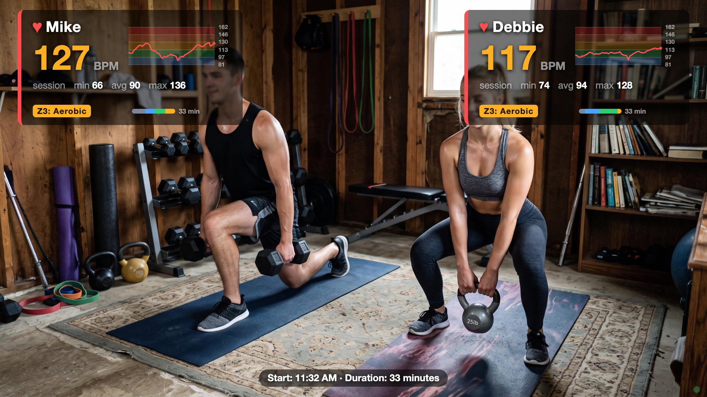

bio-overlay
Your live heart rate, on your video, for remote training sessions — right in the browser. Nothing to install.

What your trainer sees — real session data: live BPM colored by training zone, a 5-minute sparkline over the zone bands, whole-session stats, and time-in-zone bars.
What it does
bio-overlay reads your heart rate from a Bluetooth chest strap and shows it as an overlay on your webcam video — live BPM, training zone (Z1–Z5), a rolling sparkline, and session min/avg/max. Share the tab in Zoom and your trainer sees your effort in real time, composited right on your video. Works for one or two people (two straps) in the same room.
Every workout is recorded in your browser: the history page lists past sessions with time-in-zone bars and a full-workout chart, and you can export your workout data to a local file.
What you need
- A Bluetooth heart-rate chest strap — one per person; the app can connect two straps at once. We recommend the Polar H10 (Amazon) — it's what this app is developed and tested with. Any strap that speaks the standard Bluetooth Heart Rate service should also work (Garmin HRM-Dual, Wahoo TICKR, and similar). Arm/wrist optical sensors vary — chest straps are the reliable choice.
- Chrome or Edge on a computer (Mac, Windows, or Linux). Safari and Firefox don't support Web Bluetooth, and no iPhone/iPad browser does. An Android device with Chrome also works.
- Zoom (or any app that can share a screen/tab) if a trainer is watching remotely.
How to use it
- Put the strap on — moisten the electrode pads; the strap only wakes up on skin contact.
- Open the app, click Start camera and Connect strap…, and pick your strap from the chooser. First time, your browser asks once for camera and Bluetooth access, and the app asks your name and birth year (birth year sets your personal training zones).
- In Zoom: Share Screen → this Chrome tab, and tick “Optimize for video clip” so motion stays smooth. That's it — nothing else to set up.
Your data stays with you
There's no account and no server: heart-rate readings go from the strap to your browser and are stored only there (and can be deleted from the history page). Nothing is uploaded.